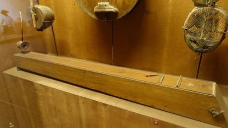

Home / Living Traditions / Southeast Asia and the Islands
Playable heritage gameDan bau
Also known as Đàn bầu · Vietnamese monochord
The dan bau is Vietnam's one-stringed instrument: a long box, a bendable rod topped with a gourd or horn, and a single string. The player touches the string lightly at fixed points to sound clear harmonics, plucks it with a small pick, and sways the rod to slide and bend the pitch like a singing voice.

_-_Vietnam_Museum_of_Ethnology_-_Hanoi,_Vietnam_-_DSC02538.JPG){kind=link}
How to play
- Seven harmonic pads on the top row are the notes the string gives when touched lightly at a node: the octave, fifth, next octave, third, fifth, a low seventh and the top octave.
- Three pads on the lower row are bent notes: the rod is pushed to slide a harmonic up or down to a note the string does not give by itself.
- Notes fall toward the line; play the matching pad as each one lands.
- Pick the harmonic ladder, a slow lullaby-style line, or a livelier folk-song style tune; each plays through twice.
Rules at a glance
- Pads are tuned from a fundamental near 131 Hz: the harmonics are placed at their true pitches, 1200, 1902, 2400, 2786, 3102, 3369 and 3600 cents above it.
- A bent note is a fixed pitch standing in for the glide: the rod's smooth slide cannot be played with a single touch.
- A touch within a short moment of the note is perfect; a nearby one is good; extra strokes cost points.
- Three stars need nearly every note on time.
About the tradition
The dan bau is central to Vietnamese folk music and is played solo, with song, or with poetry and storytelling. Its first written mention is from 1770, and it was long associated with blind street musicians; an electric pickup in the twentieth century brought it into ensembles.
Origins
A living tradition passed from person to person; it is not tied to a single dated origin. It belongs to the cultural world of Southeast Asia and the Islands.
Credits
- Instrument: Vietnamese tradition; patterns written for this game
- Photo: Daderot, CC0, source on Wikimedia Commons
- Text: CC BY-SA 4.0, World Heritage Games.
Sources

Get the app
Dan bau is one of 11 instruments in the String Music of the World app for iPhone, iPad and Android. Submitted to the App Store and Google Play; in review. Store links appear here the day it goes live. One app, many traditions, no account needed.
More games to play


Goje One-String Fiddle
Nigeria +1 · Musical instrumentsPlay preview · in the String Music of the World app


Joropo llanero band
Venezuela +1 · Musical instrumentsPlay preview · in the String Music of the World app
More from Vietnam


Gourd-crab dice
Vietnam · Board and table games
Hmong story cloth
China +3 · Crafts and making


Thung chai basket-boat spinning
Vietnam · Racing